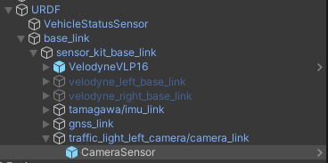
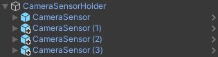
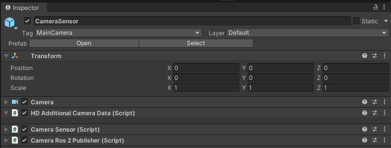
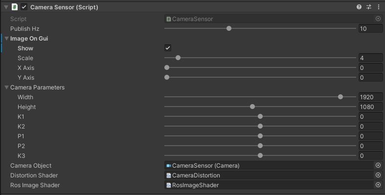
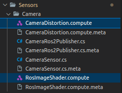
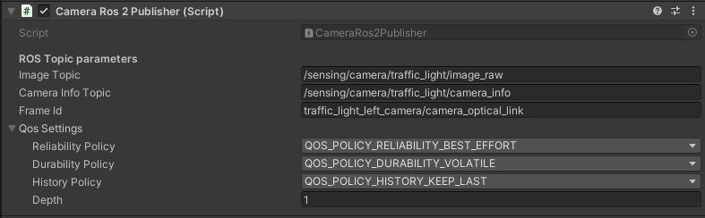

CameraSensor
Introduction
CameraSensor is a component that simulates an RGB camera.
Autonomous vehicles can be equipped with many cameras used for various purposes.
In the current version of AWSIM, the camera is used primarily to provide the image to the traffic light recognition module in Autoware.
Prefab
Prefab can be found under the following path:
Assets/AWSIM/Prefabs/Sensors/CameraSensor.prefab
Link in the default Scene
The mentioned single CameraSensor has its own frame traffic_light_left_camera/camera_link in which its data is published.
The sensor prefab is added to this frame.
The traffic_light_left_camera/camera_link link is added to the base_link object located in the URDF.

A detailed description of the URDF structure and sensors added to prefab Lexus RX450h 2015 is available in this section.
CameraSensorHolder (script)

CameraSensorHolder (script) allows the sequential rendering of multiple camera sensors.
To utilize it, each CameraSensor object should be attached as a child object of the CameraSensorHolder.

Elements configurable from the editor level
Camere Sensors- a collection of camera sensors used for renderingPublish Hz- the frequency at which camera rendering, image processing and callbacks are executedRender In Queue- camera sensors rendering sequence type: in queue (one after another) or all at the same frame
CameraSensor Components

For the CameraSensor to work properly, the GameObject to which the scripts are added must also have:
- Camera component - the basic component that ensures the functionality of the camera as a device in Unity that capture and display the world to the player.
- HD Additional Camera Data (script) - additional component that holds HDRP specific parameters for camera. This Component should be added automatically together with Camera component.
TrafficLights recognition
In case of problems with the recognition of traffic lights in Autoware, it may help to increase the image resolution and focal length of the camera in AWSIM.
Camera settings
If you would like to adjust the image captured by the camera, we encourage you to read this manual.
The CameraSensor functionality is split into two scripts:
- Camera Sensor (script) - acquires the image from the Unity camera, transforms it and saves to the BGR8 format, this format along with the camera parameters is its script output - script also calls the callback for it.
- Camera Ros2 Publisher (script) - provides the ability to publish
CameraSensoroutput as Image and CameraInfo messages type published on a specific ROS2 topics.
Scripts can be found under the following path:
Assets/AWSIM/Scripts/Sensors/CameraSensor/*
In the same location there are also *.compute files containing used ComputeShaders.
CameraSensor (script)

Camera Sensor (script) is a core camera sensor component.
It is responsible for applying OpenCV distortion and encoding to BGR8 format.
The distortion model is assumed to be Plumb Bob.
The script renders the image from the camera to Texture2D and transforms it using the distortion parameters.
This image is displayed in the GUI and further processed to obtain the list of bytes in BGR8 format on the script output.
The script uses two ComputeShaders, they are located in the same location as the scripts:
CameraDistortion- to correct the image using the camera distortion parameters,-
RosImageShader- to encode two pixels color (bgr8 - 3 bytes) into one (uint32 - 4 bytes) in order to produce ROS Image BGR8 buffer.
| API | type | feature |
|---|---|---|
| DoRender | void | Renders the Unity camera, applies OpenCV distortion to rendered image and update output data. |
Elements configurable from the editor level
Output Hz- frequency of output calculation and callback (default:10Hz)- Image On GUI:
Show- if camera image should be show on GUI (default:true)Scale- scale of reducing the image from the camera,1- will give an image of real size,2- twice smaller, etc. (default:4)X Axis- position of the upper left corner of the displayed image in the X axis,0is the left edge (default:0)Y Axis- position of the upper left corner of the displayed image in the Y axis,0is the upper edge (default:0)
- Camera parameters
Width- image width (default:1920)Height- image height (default:1080)K1, K2, P1, P2, K3- camera distortion coefficients for Plum Bob model
(default:0, 0, 0, 0, 0)
Camera Object- reference to the basic Camera component (default:None)Distortion Shader- reference to ComputeShader asset about Distortion Shader functionality (default:None)Ros Image Shader- reference to ComputeShader asset about Ros Image Shader functionality (default:None)
Output Data
The sensor computation output format is presented below:
| Category | Type | Description |
|---|---|---|
| ImageDataBuffer | byte[ ] | Buffer with image data. |
| CameraParameters | CameraParameters | Set of the camera parameters. |
CameraRos2Publisher (script)

Converts the data output from CameraSensor to ROS2 Image
and CameraInfo type messages and publishes them.
The conversion and publication is performed using the Publish(CameraSensor.OutputData outputData) method,
which is the callback triggered by Camera Sensor (script) for the current output.
Due to the fact that the entire image is always published, the ROI field of the message is always filled with zeros.
The script also ensures that binning is assumed to be zero and the rectification matrix is the identity matrix.
Warning
The script uses the camera parameters set in the CameraSensor script - remember to configure them depending on the camera you are using.
Elements configurable from the editor level
Image Topic- the ROS2 topic on which theImagemessage is published
(default:"/sensing/camera/traffic_light/image_raw")Camera Info Topic- the ROS2 topic on which theCameraInfomessage is published
(default:"/sensing/camera/traffic_light/camera_info")Frame id- frame in which data is published, used inHeader
(default:"traffic_light_left_camera/camera_link")Qos Settings- Quality of service profile used in the publication
(default:Best effort,Volatile,Keep last,1)
Published Topics
- Frequency:
10Hz - QoS:
Best effort,Volatile,Keep last/1
| Category | Topic | Message type | frame_id |
|---|---|---|---|
| Camera info | /sensing/camera/traffic_light/camera_info |
sensor_msgs/CameraInfo |
traffic_light_left_camera/camera_link |
| Camera image | /sensing/camera/traffic_light/image_raw |
sensor_msgs/Image |
traffic_light_left_camera/camera_link |